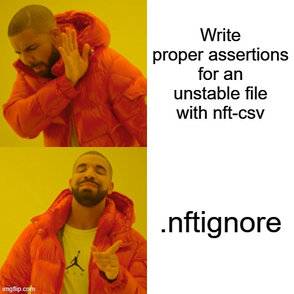

Functions usage
Functions that take named options throw an error on an unknown option name or a value of the wrong type. String options and the items of string lists accept strings, Groovy strings such as "${projectDir}/tests/.nftignore", Files and Paths. Integer options, and the items of lines, accept any whole number, such as 3L.
Snapshot functions
Functions for managing pipeline-level nf-test snapshots:
removeNextflowVersion()
nf-core pipelines create a YAML file listing software versions. This function removes the Nextflow version from that file, since it changes between runs and makes snapshots unstable.
Example input (nf_core_rnaseq_software_mqc_versions.yml):
After applying removeNextflowVersion():
Usage:
assert snapshot(removeNextflowVersion("$outputDir/pipeline_info/nf_core_rnaseq_software_mqc_versions.yml")).match()
Supports wildcard patterns when the filename varies:
The argument is a path (or wildcard pattern) matching a versions file in YAML format per the nf-core standard. Wildcards merge all matching files. A missing file, a wildcard matching no file, or a top-level key without nested keys fails the test.
Note: Returned YAML has keys sorted alphabetically at all levels for consistent output.
removeFromYamlMap()
Remove a key or entire section from a YAML file. Supports two patterns and wildcard file paths. A missing file, a wildcard matching no file, or a top-level key without nested keys fails the test.
Remove a specific subkey (3 arguments)
Input:
Result: the "Nextflow" subkey is removed from "Workflow":
Remove an entire section (2 arguments)
Input:
Result: the entire "Workflow" section is removed:
Wildcard support
Both patterns support wildcards in the file path:
// Remove specific subkey with wildcard
removeFromYamlMap("$outputDir/pipeline_info/*_versions.yml", "Workflow", "Nextflow")
// Remove entire section with wildcard
removeFromYamlMap("$outputDir/pipeline_info/*_versions.yml", "Workflow")
Usage in tests
// Remove specific subkey
assert snapshot(removeFromYamlMap("$outputDir/pipeline_info/nf_core_pipeline_software_mqc_versions.yml", "Workflow", "Nextflow")).match()
// Remove entire section
assert snapshot(removeFromYamlMap("$outputDir/pipeline_info/nf_core_pipeline_software_mqc_versions.yml", "Workflow2")).match()
// Using wildcards
assert snapshot(removeFromYamlMap("$outputDir/pipeline_info/*_versions.yml", "Workflow", "Nextflow")).match()
Arguments:
- First: Path to the YAML file (supports
*and?wildcards) - Second: Top-level key (section name)
- Third (optional): Subkey to remove. Omit to remove the entire section.
Notes:
- Wildcards merge all matching files.
- Returned YAML has keys sorted alphabetically at all levels.
getAllFilesFromPath()
:::warning
When using this function with nf-test outputs, prefer assigning the nf-test outputDir variable to params.outdir.
Relative local paths may work, but using $outputDir is the recommended nf-test setup for predictable path resolution.
See nf-test docs
:::
Works for local paths and S3 paths (s3://). Local paths are walked using Java NIO, following symlinks such as Nextflow's default published outputs; a symlink that loops back to a parent is left out; S3 paths are listed using the AWS CLI (aws s3 ls --recursive), and with includeDir their directories are derived from the object keys. As in .gitignore, a glob starting with **/ also matches at the top level: **/*.html matches report.html.
Returns a sorted list of relative String paths (relative to the given root), or of Files with relative: false.
Snapshot relative paths as they are: *.name fails on them with No such property: name for class: java.lang.String.
Supported named parameters:
| Option | Type | Default | Description |
|---|---|---|---|
ignore |
List<String> |
[] |
Glob patterns to exclude |
include |
List<String> |
["**"] |
Glob patterns to include |
includeDir |
Boolean |
false |
Also emit directory entries |
ignoreFile |
String |
— | Path to a local file containing additional ignore globs (one per line) |
noSignRequest |
Boolean |
false |
Pass --no-sign-request to the AWS CLI when listing a public S3 bucket without credentials |
relative |
Boolean |
true |
Return relative paths; false returns Files, so snapshots record their md5 (local, no includeDir) |
Local usage
// Relative paths of files and directories, ignoring unstable trace files
def stable_path = getAllFilesFromPath(params.outdir, includeDir: true, ignore: ['pipeline_info/execution_*.{html,txt}'])
// Files instead of paths, so the snapshot records their md5 (replaces getAllFilesFromDir())
def stable_content = getAllFilesFromPath(params.outdir, relative: false, ignoreFile: 'tests/mytest/.nftignore')
assert snapshot(stable_path, stable_content).match()

S3 usage
// Requires the AWS CLI to be available on the path
def s3_files = getAllFilesFromPath("s3://my-bucket/results/", ignore: ['pipeline_info/**'])
assert snapshot(s3_files).match()
AWS credentials are resolved by the AWS CLI (environment variables, ~/.aws/credentials, IAM roles, etc.).
:::note
Support for GCS (gs://) and Azure Blob (az://) paths is planned for a future version.
:::
downloadFromS3()
Downloads a single file from S3 to a temporary local directory and returns the local path. The destination mirrors the S3 key structure under a plugin-specific temp directory, so repeated calls for the same URI are idempotent.
It uses nextflow fs cp, so it needs Nextflow, and Nextflow's S3 credentials for private buckets. Public buckets need no noSignRequest option: Nextflow falls back to anonymous access, even with invalid credentials.
downloadFromS3(options, uri) is deprecated: it takes no options, ignores them and prints a warning. Use downloadFromS3(uri).
def local_file = downloadFromS3("s3://my-bucket/path/to/file.vcf.gz")
assert snapshot(path(local_file.toString())).match()
// Combine with getAllFilesFromPath to download and snapshot specific files
def vcf_files = getAllFilesFromPath("s3://my-bucket/results/", noSignRequest: true, include: ['**/*.vcf.gz'])
assert snapshot(
vcf_files.collect { relPath ->
path(downloadFromS3("s3://my-bucket/results/${relPath}").toString())
}
).match()
getAllFilesFromDir()
:::caution
Deprecated. It prints a warning. Use getAllFilesFromPath() instead, which takes the same named parameters:
getAllFilesFromDir() |
getAllFilesFromPath() |
|---|---|
getAllFilesFromDir(dir, ...) |
getAllFilesFromPath(dir, relative: false, ...) |
getAllFilesFromDir(dir, relative: true, ...) |
getAllFilesFromPath(dir, ...) |
getAllFilesFromPath() accepts includeDir: true only with relative paths: nf-test snapshots every file inside a directory File, including files matched by ignore or ignoreFile.
:::
getRelativePath()
:::warning
This function requires absolute paths and does not support relative paths to params.outdir.
Assign the nf-test outputDir variable to params.outdir when calling this function.
cf nf-test/docs
:::
Converts a list of files or path strings to paths relative to a given directory.
results/
├── pipeline_info
│ └── execution_trace_2024-09-30_13-10-16.txt
└── stable
├── stable_content.txt
└── stable_name.txt
2 directories, 3 files
def stable_content = getAllFilesFromPath(params.outdir, relative: false, ignore: ['pipeline_info/execution_*.{html,txt}'])
Output:
getAllFilesFromPath() returns relative paths directly, folders included with includeDir: true:
def stable_path = getAllFilesFromPath(params.outdir, includeDir: true, ignore: ['pipeline_info/execution_*.{html,txt}'])
getAllFilesFromChannel()
Extracts absolute file paths from Nextflow channel outputs. Collects and flattens nested structures, filters out metadata maps, and returns only paths (strings starting with "/"). As in sanitizeOutput(), a map emitted directly on the channel is a record and its values are read: this includes maps from untyped val outputs, such as a meta map emitted alone.
Before:
Or the more generic pattern:
After:
Basic usage
test("Process output test") {
then {
assert snapshot(
getAllFilesFromChannel(process.out.html),
getAllFilesFromChannel(process.out.zip)
).match()
}
}
Usage with file names
Combine with Groovy's .collect() to extract file names:
test("Process output test") {
then {
assert snapshot(
// Get just the file names
getAllFilesFromChannel(process.out.html).collect { f -> file(f).name },
// Get the full paths
getAllFilesFromChannel(process.out.html)
).match()
}
}
listToMD5()
Converts a list of values to an MD5 hash. All values must be convertible to strings. Values are joined with newlines before hashing, so ["ab"] and ["a", "b"] give different hashes; a single value hashes as its text. A list of lines hashes like the text they form, so printf 'a\nb' | md5sum gives the hash of ["a", "b"].
A common use case: read a file, remove unstable lines with excludeLines(), then regenerate the MD5 hash.
excludeLines()
Reads a file and returns its lines, minus the excluded ones.
| Option | Type | Default | Description |
|---|---|---|---|
lines |
List<Integer> |
[] |
1-based numbers of the lines to remove; a range such as 2..4 works |
ignore |
List<String> |
[] |
Remove the lines containing any of these strings |
Unknown options, wrong option types, line numbers outside the file and empty ignore strings throw an error. Line numbers shift when the file gains or loses lines, so prefer ignore when the unstable lines have a recognisable content.
assert snapshot(
listToMD5(excludeLines("$outputDir/report.txt", lines: [1], ignore: ["run date:"]))
).match()
filterNextflowOutput()
Filters Nextflow stdout/stderr to remove variable content that makes snapshots unstable. Censors timestamps, process hashes, file paths, version messages, and empty lines.
// Basic usage
def filtered_stdout = filterNextflowOutput(workflow.stdout)
def filtered_stderr = filterNextflowOutput(workflow.stderr)
def filtered_both = filterNextflowOutput(workflow.stdout + workflow.stderr)
// Preserve ANSI escape codes (stripped by default)
def filtered_with_ansi = filterNextflowOutput(workflow.stdout + workflow.stderr, keepAnsi: true)
// Ignore lines containing specific strings
def filtered_with_ignore = filterNextflowOutput(workflow.stdout, ignore: ["Submitted process"])
// Include only lines containing specific strings
def filtered_with_include = filterNextflowOutput(workflow.stdout, include: ["Submitted process"])
// Remove each regex match from every line; `.*foo.*` removes the whole line
def filtered_with_patterns = filterNextflowOutput(workflow.stdout, additionalPatterns: [/\d+ ms/])
These line types are sorted alphabetically after censoring:
Staging foreign filemessagesSubmitted processmessagesCreating env using conda:andPulling Singularity imagemessagesCheck * file for detailsmessagesWARN:messagesERROR ~messages
Set sorted: false to disable sorting (not recommended; causes snapshot failures).
All other lines keep their original order.
Example: process submissions like
[57/0d391c] Submitted process > FASTQC (sample_2)
[6f/3be732] Submitted process > FASTQC (sample_1)
[6d/0082ab] Submitted process > FASTQC (sample_3)
become:
[NXF_HASH] Submitted process > FASTQC (sample_1)
[NXF_HASH] Submitted process > FASTQC (sample_2)
[NXF_HASH] Submitted process > FASTQC (sample_3)
ANSI escape codes are stripped by default to prevent garbled text in snapshots. Set keepAnsi: true to preserve them.
Filtered patterns:
- Empty lines (removed entirely)
- Timestamps (replaced with
[TIMESTAMP]) - Process hashes (replaced with
[NXF_HASH]), work directory hashes such as7b/b7421f…and 30 to 32 character hex hashes (replaced with[NFT_HASH]) - The run name (replaced with
[RUN_NAME]), the user name inuserName :lines ([USER]) and the revision ([REVISION]) - Container engine names (replaced with
[CONTAINER]) - File paths (replaced with
[PATH]), including common ENV variables:HOME,NFT_WORKDIR,NXF_CACHE_DIR,NXF_CONDA_CACHEDIR,NXF_HOME,NXF_SINGULARITY_CACHEDIR,NXF_SINGULARITY_LIBRARYDIR,NXF_TEMP,NXF_WORK - Version information: "Nextflow X.Y.Z is available" messages removed, version strings replaced with
[VERSION] - Lines printed only when a cache is empty:
Downloading pluginmessages and containercache directory has not been definedwarnings (removed entirely)
Example test:
test("my_pipeline_test") {
when {
params {
outdir = "$outputDir"
}
}
then {
assert snapshot(
filterNextflowOutput(workflow.stdout + workflow.stderr)
).match()
}
}
Dependency management
Functions for managing test dependencies on nf-core components. Useful when writing tests for cross-organisational subworkflows in non-nf-core repositories.
nfcoreInitialise() - set up a temporary nf-core library
Creates a temporary nf-core library for module installation. Pass the path to the library location, inside ${launchDir} so each test has its own library: tests running in parallel would otherwise install into the same one.
nfcoreInstall() - Install modules to a temporary library
Installs nf-core modules into a temporary library. Pass the library path and either a list of module names (tool/subtool format) or a list of maps with name, sha, and remote keys (sha and remote are optional).
A module that fails to install fails the test, including when nf-core asks a question, such as whether to delete a corrupted modules cache.
setup {
nfcoreInitialise("${launchDir}/library")
nfcoreInstall("${launchDir}/library", ["minimap2/index"])
nfcoreInstall(
"${launchDir}/library",
[
[
name: "minimap2/align",
sha: "5850432aab24a1924389b660adfee3809d3e60a9"
],
[
name: "fastqc",
remote: "https://github.com/nf-core-test/modules.git"
],
[
name: "prokka",
sha: "9627f4367b11527194ef14473019d0e1a181b741"
remote: "https://github.com/nf-core-test/modules.git"
],
]
)
}
A state/ directory inside the library tracks which modules have been installed. If a state file exists for a module (matching name, sha, and remote), installation is skipped.
nfcoreLink() - Link a temporary library to your modules directory
Symlinks modules from the temporary library into your project's modules directory. A missing library or modules directory fails the test, and so does a module folder that already links to another library.
setup {
nfcoreInitialise("${launchDir}/library")
nfcoreInstall("${launchDir}/library", ["minimap2/index", "minimap2/align"])
nfcoreLink("${launchDir}/library", "${baseDir}/modules/")
}
This creates a symlink at ${baseDir}/modules/nf-core. Reference nf-core modules from there as if they were installed normally.
nfcoreUnlink() - Unlink a temporary library from your modules directory
Removes all symlinks pointing to the temporary library. Takes the same arguments as nfcoreLink(), and also fails the test on a missing library or modules directory.
setup {
nfcoreInitialise("${launchDir}/library")
nfcoreInstall("${launchDir}/library", ["minimap2/index", "minimap2/align"])
nfcoreLink("${launchDir}/library", "${baseDir}/modules/")
run("MINIMAP2_INDEX") {
script "${baseDir}/modules/nf-core/minimap2/index/main.nf
...
}
}
when {
...
}
then {
...
}
cleanup {
nfcoreUnlink("${launchDir}/library", "${baseDir}/modules/")
}
nfcoreDeleteLibrary() - Completely delete a temporary library
Deletes the temporary library and all its contents. A file that cannot be deleted fails the test; a missing library does not.
setup {
nfcoreInitialise("${launchDir}/library")
nfcoreInstall("${launchDir}/library", ["minimap2/index", "minimap2/align"])
nfcoreLink("${launchDir}/library", "${baseDir}/modules/")
run("MINIMAP2_INDEX") {
script "${baseDir}/modules/nf-core/minimap2/index/main.nf
...
}
}
when {
...
}
then {
...
}
cleanup {
nfcoreDeleteLibrary("${launchDir}/library")
}
sanitizeOutput() - Sanitize process output to create clean snapshots
Cleans process and workflow outputs by removing numbered keys, creating human-readable snapshots.
Only absolute paths are outputs: an output folder is replaced by the list of its files, and unstableKeys reduce output files to their names. Other strings, such as val, env or stdout values, are kept as they are, empty strings included; unstablePatterns and ignorePatterns still match them.
Options:
unstableKeys: Snapshot only file names (no md5sum) for these keys. Use for files with unstable content.
ignoreKeys: Exclude these keys from the snapshot entirely. Use when file names vary between runs.
readsMD5Keys: Keys containing alignment files (.bam,.sam,.cram). MD5 is computed from reads only, usingnft-bam. Addnft-bamtoplugins {}beforenft-utils. For.cramfiles, pass the reference genome.fasta(.faiis auto-detected).
then {
assert snapshot(sanitizeOutput(process.out, readsMD5Keys:["bam"])).match()
assert snapshot(sanitizeOutput(process.out, readsMD5Keys:["bam"], referenceFasta: "https://url/reference.fa")).match() // for cram files
}
variantsMD5Keys: Keys containing variant files (.vcf,.vcf.gz). MD5 is computed from variants only, usingnft-vcf. BCF not yet supported. Addnft-vcftoplugins {}beforenft-utils.
tableMD5Keys: Keys containing flat text tables (.txt,.tsv,.csv,.tbl,.dat,.out). MD5 is computed from normalized table: rows and columns sorted, floats rounded to 6 decimals, absolute paths reduced to file/folder names, line endings standardized to\n. Set precision withtableDoubleDigits(default: 6) and remove leading lines starting with#withtableRemoveComments: true(default: false). UsenormalizeTable(path(process.out.csv[0][1]), 6, true)for debugging.
then {
assert snapshot(sanitizeOutput(process.out, tableMD5Keys:["csv"], tableDoubleDigits: 4, tableRemoveComments: true)).match()
}
unstablePatternsandignorePatterns: Glob patterns matched against each channel value.unstablePatternsremoves md5sums;ignorePatternsexcludes files entirely. These patterns should be mutually exclusive. Keys set byunstableKeys,ignoreKeys,readsMD5Keys, andvariantsMD5Keysare not matched against these patterns. As in.gitignore, a glob starting with**/also matches at the top level:**/*.logmatchesrun.log.
then {
assert snapshot(sanitizeOutput(process.out, unstablePatterns:["**/*.log"], ignorePatterns:["**/VERSION_*"])).match()
}
Records: a typed process (nextflow.enable.types = true) emits records, which reach the test as maps. The key options above also accept record field names: a key that is not a channel name applies to that field of every record, and the other fields are sanitized as usual. A key that is neither a channel name nor a record field fails the test.
- A record is any map emitted directly on a channel. This includes maps from untyped
valoutputs. Records nested in a tuple or in another record are not matched. - A field key applies to that field in the records of every channel.
- A channel name takes precedence. If a key names a channel, a record field with the same name gets the default handling.
then {
// process.out is [0: [[id: "test", meta: null, lc_extrap: "/path/to/test.lc_extrap.txt", log: "/path/to/test.command.log"]]]
assert snapshot(sanitizeOutput(process.out, unstableKeys:["log"])).match()
}
extract() - Extract an archive
Extracts an archive and returns the directory it was extracted into, or with path, a file or folder in it. The archive can be a local path or a file:// URL, used in place, or any other URL Nextflow can read, such as http(s)://, ftp:// or s3://, downloaded with nextflow fs cp. Downloads are deleted once extracted. Supports Zip and Tar archives. Tar compression formats: gzip, gz, bzip2, bz2, xz, lz4, lzma, lzop, zst, zstd. A plain gzip or xz file (.gz, .gzip or .xz, but not .tar.gz or .tar.xz) is decompressed into the directory, without that suffix. A failed download or extraction throws, failing the test.
Options:
extractDir: directory to extract into. Without it, the archive is extracted into a new temporary directory, deleted when nf-test exits. Use"${launchDir}/..."rather thanoutputDir, so the files are never picked up as outputs.compression: archive type, in any case, for names without a usable extension. Without it, the type is taken from the file extension. For compressed Tar, use formats like"tar.bz2"or"tbz2". For a plain gzip or xz file, use"gz","gzip"or"xz".path: file or folder to return instead of the directory, relative to it. A path not inside the directory, or missing from the archive, fails the test.
Any other option fails the test.
setup {
extract("https://www.example.com/pretty_database.zip", extractDir: "${launchDir}/data_dir")
extract("s3://my-bucket/beautiful_database.tar.gz", extractDir: "${launchDir}/data_dir")
extract("/data/secret/data", extractDir: "${launchDir}/data_dir", compression: "tar.bz2")
}
when {
params {
pretty_db_path = "${launchDir}/data_dir/pretty_db"
beautiful_db_path = "${launchDir}/data_dir/db/beauty_db"
secret_db_path = "${launchDir}/data_dir/db/secret"
}
}
Use path to get a file or folder instead of the directory:
def fasta = extract("https://www.example.com/genome.fa.gz", path: "genome.fa")
def bam = extract("https://www.example.com/data.tar.gz", path: "data/sample.bam")
Without extractDir, keep the returned directory in a variable declared at test level, so when can read what setup set:
test("pretty database") {
def db
setup {
db = extract("https://www.example.com/pretty_database.zip")
}
when {
process {
"""
input[0] = file('${db}/pretty_db')
"""
}
}
}
curlAndExtract(url, dir) and curlAndExtract(url, dir, compression) are deprecated: they work like extract(url, extractDir: dir, compression: compression) and print a warning.